14 transparent 24x24 weather icons. Literal 1x, 2x and nearest-neighbour 4x proofs. Panels use 75% opacity over the supplied map crops. No ground bases or seasonal assets belong to this part.
Clear day, Clear night, Cloudy, Overcast, Rain, Heavy rain, Storm, Snow, Blizzard, Fog, Wind, Hail, Sandstorm, Heat wave
1x
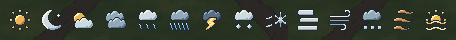
2x
4x
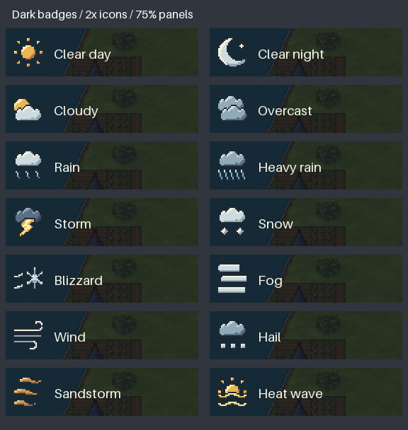
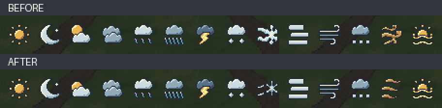
1x
2x
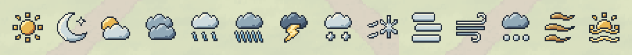
4x
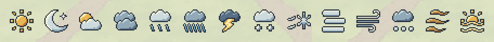
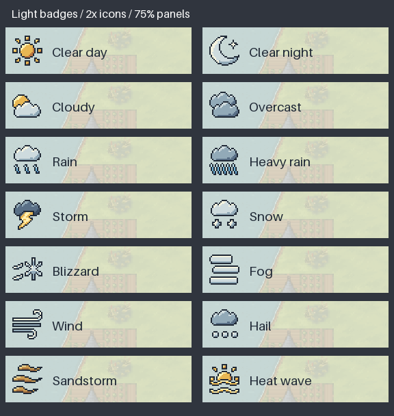
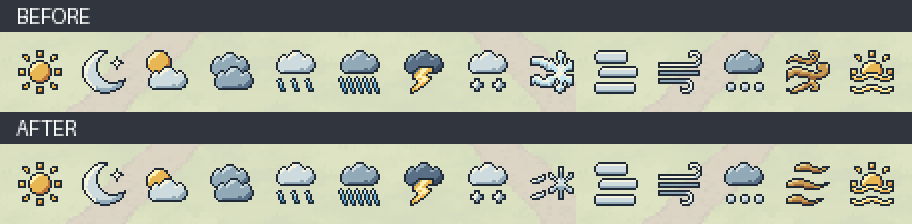
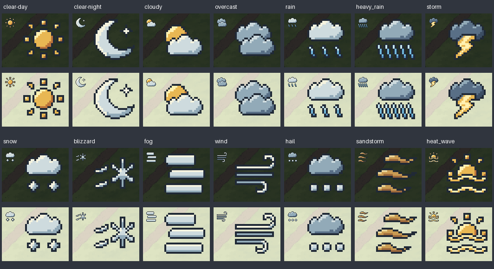
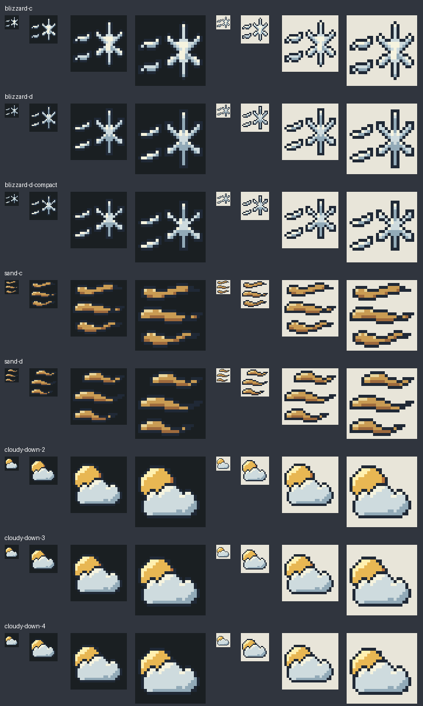
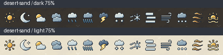
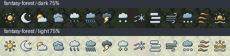
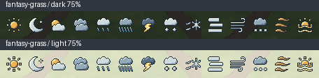
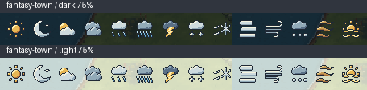
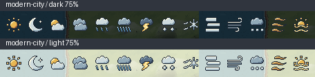
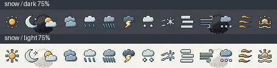
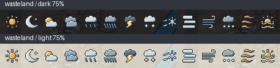
Saved-art self-review. These are mock-ups, not screenshots of an in-engine test.